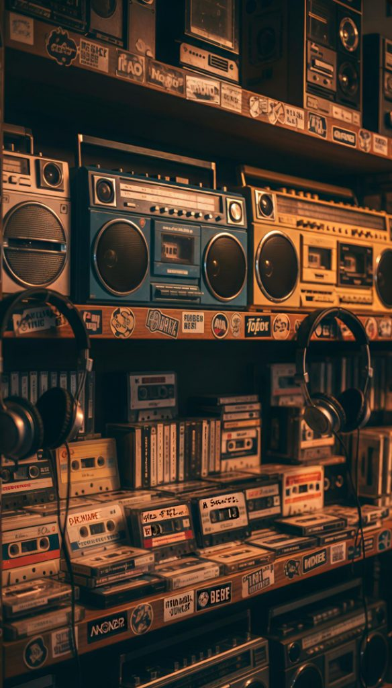

Información general
Nombre y eslogan que se muestran en el sitio.
Stream de audio
URL de tu stream de Centova Cast y de los metadatos (canción actual).
Es la dirección directa del audio. Debe empezar con
https:// para funcionar en el sitio publicado.
Sirve para mostrar el nombre de la canción. Si no la tienes, déjala vacía y el reproductor seguirá funcionando.
Video en vivo
Elige de dónde viene la transmisión de video del sitio.
Recomendado: muestra automáticamente el directo que esté activo en tu canal.
Úsalo solo si quieres fijar un video concreto en vez del directo del canal.
Chat en vivo
El chat usa Chatango (gratis). Necesitas crear un grupo y pegar su ID aquí.
Crea tu grupo gratis en chatango.com/creategroup y pega aquí el nombre del grupo.
Redes sociales y contacto
Los enlaces vacíos simplemente no se muestran en el sitio.
Imagen de fondo
Cambia la imagen de fondo de todo el sitio y qué tan oscura se ve.

Recomendado: JPG de buena calidad. Se guardará como
assets/bg-hero.jpg.
Más a la izquierda = fondo más claro y visible. Más a la derecha = fondo más oscuro (texto más legible).
Banners publicitarios
Sube las imágenes de tus anuncios. Los espacios sin imagen muestran "Espacio disponible".
Noticias
Agrega, edita o elimina las noticias que aparecen en el sitio.